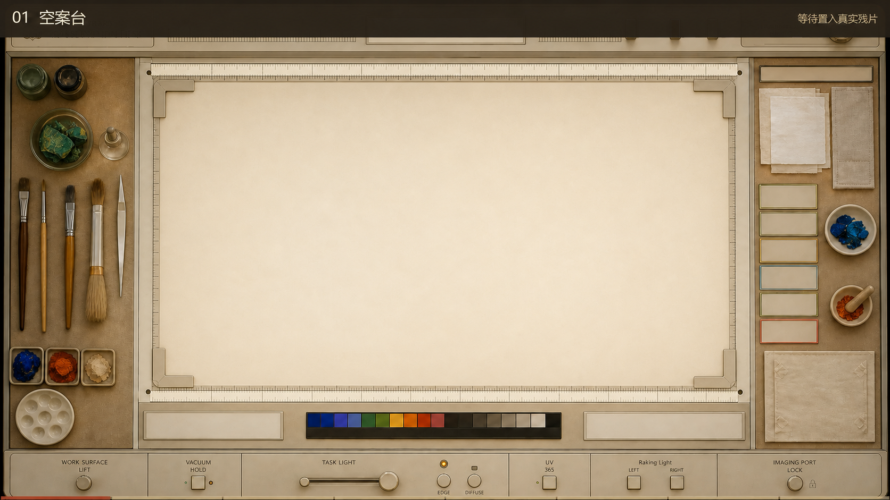
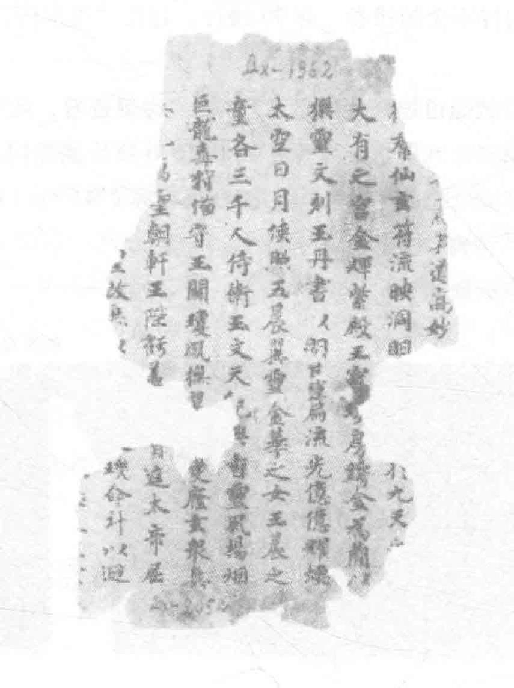
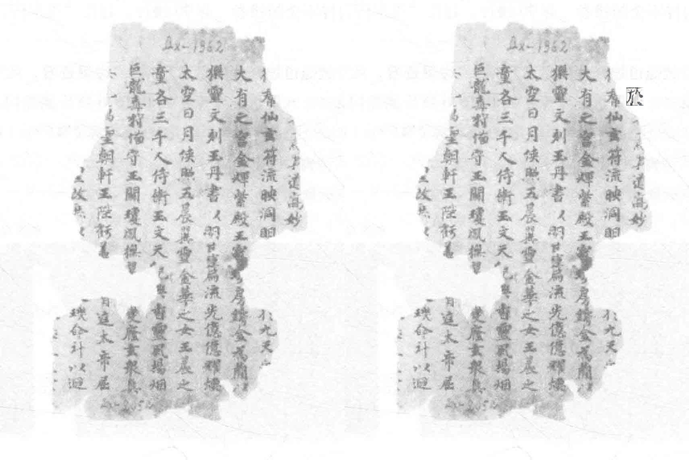

文献匹配
优先在佛经与相关文献中寻找可靠对应原文。
复原路径
优先在佛经与相关文献中寻找可靠对应原文。
当文献无法可靠匹配时，再结合现有上下文进行辅助推断。
复原工作台
保留原有上传、文献匹配、辅助推断、进度与结果来源流程；所有分析在工作台中逐步呈现。

EVIDENCE-CONSTRAINED RESTORATION
这里使用保存的正式案例说明机制：文献候选只负责定位，研究者逐项决定哪些内容可以进入修复，未批准区域保持原像素。
候选并列呈现，歧义不会被隐藏；如果依据不足，可以直接保持弃权。
每个区域都需要明确决定和理由，只有接受或人工修改的内容才能进入下一步。

当前区域 · 0000G2075《御製釋迦牟尼佛讚》卷1
没有被人工接受的区域不会进入图像处理，也不会被补写为确定原文。
通过图层切换、擦拭和透明度检查修复影响；工程通过不等于人工视觉验收完成。

